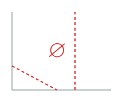
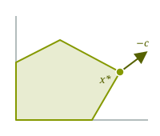
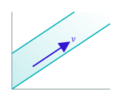
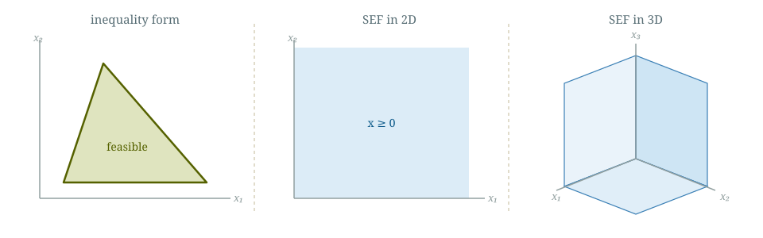
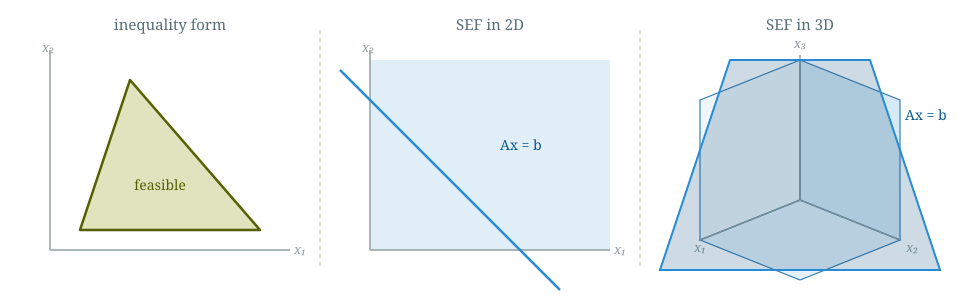
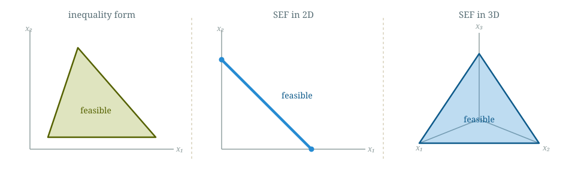
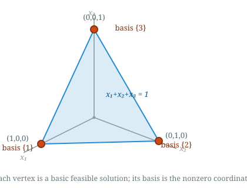

Kevin Shu
We say a linear program with a minimization objective is
If it has a maximization objective, then we would want the objective to be made arbitrarily large.
That is to say that for any number $t$, there is a feasible point with objective value less than $t$.
Example:
| min | $x_1$ |
| such that | $x \le 1$ |
This is unbounded because for any $t$, $\min(t-1,0)$ is feasible, and the objective value will be less than $t$.
Not An Example:
| min | $x_1$ |
| such that | $x \ge 1$ |
This is not unbounded; if $t < 1$, then there is no feasible point with objective less than $t$.
Boundedness is a property of the whole linear program, not just the constraints.
Trichotomy theorem
Every linear program satisfies exactly one of the following:For LP $\min c^{\intercal} x$ s.t. $Ax \le b$, each outcome has a certificate.
Infeasible

Certificate:
\[\begin{aligned}y &\ge 0\\A^{\intercal} y &= 0\\b^{\intercal} y &< 0\end{aligned}\]
Has an optimal point

Certificate:
A feasible $x^*$ and
\[\begin{aligned}y &\ge 0\\A^{\intercal} y &= -c^{\intercal}\\b^{\intercal} y &= -c^{\intercal} x^*\end{aligned}\]
Unbounded

Certificate:
A feasible $x$, and
\[\begin{aligned}Av &\le 0\\c^{\intercal} v &< 0\end{aligned}\]
| min | $-x_1 - x_2 - x_3$ |
| such that | $x_1 - x_2 \le 1$ |
| $x_2 - x_3 \le 1$ | |
| $-x_1 \le 0$ |
Imagine adding one to every $x_i$. This keeps all of the constraints valid, and decreases the objective.
Therefore, this LP is unbounded. I can make the objective as small as I want while staying feasible.
In matrix form, with $c = (-1,-1,-1)$, \[ A = \begin{pmatrix} 1 & -1 & 0 \\ 0 & 1 & -1 \\ -1 & 0 & 0\end{pmatrix}, \qquad b = \begin{pmatrix} 1 \\ 1 \\ 0\end{pmatrix}. \]
The feasible point $x = (0,0,0)$ together with $v = (1,1,1)$ is a certificate of unboundedness: \[ Av = \begin{pmatrix} 0 \\ 0 \\ -1\end{pmatrix} \le 0, \qquad c^{\intercal} v = -3 < 0. \]
| min | $x_1 + x_2 + x_3$ |
| such that | $x_1 + x_2 + x_3 \le -1$ |
| $-x_1 \le 0$ | |
| $-x_2 \le 0$ | |
| $-x_3 \le 0$ |
The last three constraints say $x_1, x_2, x_3 \ge 0$, so $x_1 + x_2 + x_3 \ge 0$.
But the first constraint asks for $x_1 + x_2 + x_3 \le -1$. No point can satisfy both, so the LP is infeasible.
| min | $x_1 + x_2 + x_3$ |
| such that | $x_1 + x_2 + x_3 \le -1$ |
| $-x_1 \le 0$ | |
| $-x_2 \le 0$ | |
| $-x_3 \le 0$ |
Another perspective: If we add together all of the constraints, we get \[ (x_1+x_2+x_3) - x_1 - x_2 - x_3 \le -1 + 0 + 0 + 0. \] or $0 \le -1$, which is an invalid result.
In matrix form, \[ A = \begin{pmatrix} 1 & 1 & 1 \\ -1 & 0 & 0 \\ 0 & -1 & 0 \\ 0 & 0 & -1\end{pmatrix}, \qquad b = \begin{pmatrix} -1 \\ 0 \\ 0 \\ 0\end{pmatrix}. \]
Adding all four constraints (weights $y = (1,1,1,1)$) gives $0 \le -1$, a contradiction. This $y \ge 0$ is a certificate of infeasibility: \[ A^{\intercal} y = \begin{pmatrix} 0 \\ 0 \\ 0\end{pmatrix}, \qquad b^{\intercal} y = -1 < 0. \]
| min | $-x_1 - x_2 - x_3$ |
| such that | $x_1 \le 1$ |
| $x_2 \le 1$ | |
| $x_3 \le 1$ |
Minimizing $-x_1-x_2-x_3$ is the same as maximizing $x_1 + x_2 + x_3$.
Each constraint caps a variable at $1$, so $x_1 + x_2 + x_3 \le 3$, with equality at $x^* = (1,1,1)$. So $x^*$ is optimal, with value $-3$.
In matrix form, with $c = (-1,-1,-1)$, \[ A = \begin{pmatrix} 1 & 0 & 0 \\ 0 & 1 & 0 \\ 0 & 0 & 1\end{pmatrix}, \qquad b = \begin{pmatrix} 1 \\ 1 \\ 1\end{pmatrix}. \]
The optimal $x^* = (1,1,1)$ together with $y = (1,1,1)$ is a certificate of optimality: \[ y \ge 0, \qquad A^{\intercal} y = \begin{pmatrix} 1 \\ 1 \\ 1\end{pmatrix} = -c^{\intercal}, \qquad b^{\intercal} y = 3 = -c^{\intercal} x^*. \]
In the textbook, LPs are written in standard equality form.
Different forms of LPs are like different ways of writing fractions; they look different but are essentially the same.
The standard equality form for an LP is
| max | $c^{\intercal}x$ |
| such that | $Ax = b$ |
| $x \ge 0$ |
The only inequality constraints allowed are setting all variables to be nonnegative; everything else is an equality constraint.
The standard equality form for an LP is
| max | $c^{\intercal}x$ |
| such that | $Ax = b$ |
| $x \ge 0$ |
Contrast with the form we have been using so far
| min | $c^{\intercal}x$ |
| such that | $Ax \le b$ |

SEF starts from the nonnegative orthant $x \ge 0$.

Overlay the affine subspace given by $Ax = b$.

The feasible region is the part of $Ax = b$ lying in the orthant $x \ge 0$.
The standard equality form for an LP is
| max | $c^{\intercal}x$ |
| such that | $Ax = b$ |
| $x \ge 0$ |
Contrast with the form we have been using so far
| min | $c^{\intercal}x$ |
| such that | $Ax \le b$ |
We want to get from one form to the other. There are a few steps to doing this.
Example: Consider the following LP, not in SEF.
| min | $x_1+x_2+x_3$ |
| such that | $x_1+x_2+x_3 \le 1$ |
| $x_1-x_2+x_3 \le 2$ | |
| $x_1+2x_2 \ge 3$ | |
| $x_1-3x_2 \ge 0$ |
How to put this in SEF?
Example: Consider the following LP, not in SEF.
| min | $x_1+x_2+x_3$ |
| such that | $x_1+x_2+x_3 \le 1$ |
| $x_1-x_2+x_3 \le 2$ | |
| $x_1+2x_2 \ge 3$ | |
| $x_1-3x_2 \ge 0$ |
Step 1: Use negation if necessary to replace make all of the inequalities less than or equal to, and also make the objective maximization.
Example: Consider the following LP, not in SEF.
| max | $-(x_1+x_2+x_3)$ |
| such that | $x_1+x_2+x_3 \le 1$ |
| $x_1-x_2+x_3 \le 2$ | |
| $-(x_1+2x_2) \le -3$ | |
| $-(x_1-3x_2) \le 0$ |
Step 1: Use negation if necessary to replace make all of the inequalities less than or equal to, and also make the objective maximization.
Example: Consider the following LP, not in SEF.
| max | $-x_1+x_2+x_3$ |
| such that | $x_1+x_2+x_3 \le 1$ |
| $x_1-x_2+x_3 \le 2$ | |
| $-x_1-2x_2 \le -3$ | |
| $-x_1+3x_2 \le 0$ |
Step 1: Use negation if necessary to replace make all of the inequalities less than or equal to, and also make the objective maximization.
Example: Consider the following LP, not in SEF.
| max | $-x_1+x_2+x_3$ |
| such that | $x_1+x_2+x_3 \le 1$ |
| $x_1-x_2+x_3 \le 2$ | |
| $-x_1-2x_2 \le -3$ | |
| $-x_1+3x_2 \le 0$ |
Step 2: Introduce nonnegative slack variables (one for each inequality) to take out the slack.
Example: Consider the following LP, not in SEF.
| max | $-x_1+x_2+x_3$ |
| such that | $x_1+x_2+x_3$ $\le 1$ |
| $x_1-x_2+x_3$ $\le 2$ | |
| $-x_1-2x_2$ $\le -3$ | |
| $-x_1+3x_2$ $\le 0$ | |
| $s_1, s_2, s_3, s_4 \ge 0$ |
Step 2: Introduce nonnegative slack variables (one for each inequality) to take out the slack.
Example: Consider the following LP, not in SEF.
| max | $-x_1+x_2+x_3$ |
| such that | $x_1+x_2+x_3$ $+\, s_1$ $= 1$ |
| $x_1-x_2+x_3$ $+\, s_2$ $= 2$ | |
| $-x_1-2x_2$ $+\, s_3$ $= -3$ | |
| $-x_1+3x_2$ $+\, s_4$ $= 0$ | |
| $s_1, s_2, s_3, s_4 \ge 0$ |
Step 2: Introduce nonnegative slack variables (one for each inequality) to take out the slack.
Example: Consider the following LP, not in SEF.
| max | $-x_1+x_2+x_3$ |
| such that | $x_1+x_2+x_3 + s_1 = 1$ |
| $x_1-x_2+x_3 +s_2= 2$ | |
| $-x_1-2x_2 +s_3 = -3$ | |
| $-x_1+3x_2 +s_4 = 0$ | |
| $s_1, s_2, s_3, s_4 \ge 0$ |
Step 3: Replace each $x_i$ which does not need to be nonnegative with the difference of two new variables $x_{i}^+$ and $x_i^-$.
Example: Consider the following LP, not in SEF.
| max | $-(x_1^+-x_1^-)$$+(x_2^+-x_2^-)$$+(x_3^+-x_3^-)$ |
| such that | $(x_1^+-x_1^-)$$+(x_2^+-x_2^-)$$+(x_3^+-x_3^-)$ $+\, s_1$ $= 1$ |
| $(x_1^+-x_1^-)$$-(x_2^+-x_2^-)$$+(x_3^+-x_3^-)$ $+\, s_2$ $= 2$ | |
| $-(x_1^+-x_1^-)$$-2(x_2^+-x_2^-)$ $+\, s_3$ $= -3$ | |
| $-(x_1^+-x_1^-)$$+3(x_2^+-x_2^-)$ $+\, s_4$ $= 0$ | |
| $x_i^+, x_i^-, s_j \ge 0$ |
Step 3: Replace each $x_i$ which does not need to be nonnegative with the difference of two new variables $x_{i}^+$ and $x_i^-$.
Example: This LP is now in SEF (and equivalent to the original)
| max | $-x_1^+-x_1^-$$+x_2^+-x_2^-$$+x_3^+-x_3^-$ |
| such that | $x_1^+-x_1^-$$+x_2^+-x_2^-$$+x_3^+-x_3^-$ $+\, s_1$ $= 1$ |
| $x_1^+-x_1^-$$-x_2^+-x_2^-$$+x_3^+-x_3^-$ $+\, s_2$ $= 2$ | |
| $-x_1^+-x_1^-$$-2x_2^+-x_2^-$ $+\, s_3$ $= -3$ | |
| $-x_1^+-x_1^-$$+3x_2^+-x_2^-$ $+\, s_4$ $= 0$ | |
| $x_i^+, x_i^-, s_j \ge 0$ |
More general schematic:
First apply step 1 of negating inequalities/objective to bring the LP in the following form:
| max | $c^{\intercal}x$ |
| such that | $Ax$ $\le b$ |
for an $m\times n$ matrix $A$.
More general schematic:
Step 2 is to introduce $s \in \R^m$ nonnegative slack variables to absorb the slack.
| max | $c^{\intercal}x$ |
| such that | $Ax$ $+\, s$ $= b$ |
| $s \ge 0$ |
More general schematic:
Step 3 is to replace all of the $x_i$'s with differences of nonnegative variables:
| max | $c^{\intercal}(x^+-x^-)$ |
| such that | $A(x^+-x^-)$ $+\, s$ $= b$ |
| $x^+, x^-, s \ge 0$ |
At this point, the LP is in SEF, though we can do one more step to make it a little clearer:
| max | $c^{\intercal}(x^+-x^-)$ |
| such that | $A(x^+-x^-)$ $+\, s$ $= b$ |
| $x^+, x^-, s \ge 0$ |
is equivalent to
| max | $c'^{\intercal}z$ |
| such that | $A'z= b$ |
| $z \ge 0$ |
where we think of $z = \begin{pmatrix}x^+\\x^-\\s\end{pmatrix}$, $c' = \begin{pmatrix}c \\ -c \\ 0\end{pmatrix}$ and $A' = \begin{pmatrix}A \\ - A \\ I\end{pmatrix}$.
Another example. Here $x_2 \ge 0$ but $x_1$ is free.
| min | $2x_1 + 3x_2$ |
| such that | $x_1 + x_2 \ge 4$ |
| $x_1 - x_2 \le 6$ | |
| $x_1 + 2x_2 = 5$ | |
| $x_2 \ge 0$ |
Step 1: make the objective a max and every inequality a $\le$ (negating where needed). The equality stays as is.
| max | $-(2x_1 + 3x_2)$ |
| such that | $-x_1 - x_2 \le -4$ |
| $x_1 - x_2 \le 6$ | |
| $x_1 + 2x_2 = 5$ | |
| $x_2 \ge 0$ |
Step 2: add a slack variable to each inequality. The equality $x_1 + 2x_2 = 5$ needs no slack.
| max | $-(2x_1 + 3x_2)$ |
| such that | $-x_1 - x_2 + s_1 = -4$ |
| $x_1 - x_2 + s_2 = 6$ | |
| $x_1 + 2x_2 = 5$ | |
| $x_2, s_1, s_2 \ge 0$ |
Step 3: replace only the free variable $x_1$ with $x_1^+ - x_1^-$. Since $x_2 \ge 0$ already, it is left alone.
| max | $-(2(x_1^+-x_1^-) + 3x_2)$ |
| such that | $-(x_1^+-x_1^-) - x_2 + s_1 = -4$ |
| $(x_1^+-x_1^-) - x_2 + s_2 = 6$ | |
| $(x_1^+-x_1^-) + 2x_2 = 5$ | |
| $x_1^+, x_1^-, x_2, s_1, s_2 \ge 0$ |
This LP is now in SEF.
| max | $-2x_1^+-x_1^- + 3x_2$ |
| such that | $-x_1^+-x_1^- - x_2 + s_1 = -4$ |
| $x_1^+-x_1^- - x_2 + s_2 = 6$ | |
| $x_1^+-x_1^- + 2x_2 = 5$ | |
| $x_1^+, x_1^-, x_2, s_1, s_2 \ge 0$ |
For LP $\max c^{\intercal} x$ s.t. $Ax = b, x\ge 0$, each outcome has a certificate.
Infeasible
Certificate: a free $y$ with
\[\begin{aligned}A^{\intercal} y &\ge 0\\b^{\intercal} y &< 0\end{aligned}\]
Has an optimal point
Certificate:
A feasible $x^*$ and a free $y$ with
\[\begin{aligned}A^{\intercal} y &\ge c\\b^{\intercal} y &= c^{\intercal} x^*\end{aligned}\]
Unbounded
Certificate:
A feasible $x$, and a $v$ with
\[\begin{aligned}Av &= 0\\v &\ge 0\\c^{\intercal} v &> 0\end{aligned}\]
Study Strategy: Space/Time tradeoff
One approach to learning about these certificates is just to remember all of the different definitions.
Another approach is to not memorize any of these definitions, but be able to derive each notion from scratch.
My suggestion: Remember the different certificates for the LPs in SEF, and then remember the different transformations that get you from any LP to that form.
Given a LP in SEF, some symmetries become visible that might not have been obvious before.
For an LP
| max | $c^{\intercal}x$ |
| such that | $Ax = b$ |
| $x \ge 0$ |
The most interesting part is the linear equations $Ax = b$.
There are many different ways of writing essentially the same system of linear equations.
Example: \[ \begin{pmatrix} 1 & 2 & 3 \\ 4 & 5 & 6\end{pmatrix} \begin{pmatrix}x_1\\x_2\\x_3\end{pmatrix} = \begin{pmatrix} 1 \\ 0\end{pmatrix} \]
We can apply row operations to change the form of these linear equations.
Example: \[ \begin{pmatrix} 1 & 2 & 3 \\ 4 & 5 & 6\end{pmatrix} \begin{pmatrix}x_1\\x_2\\x_3\end{pmatrix} = \begin{pmatrix} 1 \\ 0\end{pmatrix} \] \[ \downarrow_{\rho_2 - 4 \rho_1}\] \[ \begin{pmatrix} 1 & 2 & 3 \\ 0 & -3 & -6\end{pmatrix} \begin{pmatrix}x_1\\x_2\\x_3\end{pmatrix} = \begin{pmatrix} 1 \\ -4 \end{pmatrix} \]
Note that even though we change the form of the linear system, the solutions stay the same. In particular, any nonnegative solution to the first system is a nonnegative solution to the second (and vice versa).
Example:
Further row operations reduce the problem to Row Reduced Echelon Form (RREF)
\[ \begin{pmatrix} 1 & 2 & 3 \\ 0 & -3 & -6\end{pmatrix} \begin{pmatrix}x_1\\x_2\\x_3\end{pmatrix} = \begin{pmatrix} 1 \\ -4 \end{pmatrix} \] \[ \downarrow_{\rho_2 / -3}\] \[ \begin{pmatrix} 1 & 2 & 3 \\ 0 & 1 & 2\end{pmatrix} \begin{pmatrix}x_1\\x_2\\x_3\end{pmatrix} = \begin{pmatrix} 1 \\ 4/3 \end{pmatrix} \]
Example:
Further row operations reduce the problem to Row Reduced Echelon Form (RREF)
\[ \begin{pmatrix} 1 & 2 & 3 \\ 0 & 1 & 2\end{pmatrix} \begin{pmatrix}x_1\\x_2\\x_3\end{pmatrix} = \begin{pmatrix} 1 \\ 4/3 \end{pmatrix} \] \[ \downarrow_{\rho_1 - 2 \rho 2}\] \[ \begin{pmatrix} 1 & 0 & -1 \\ 0 & 1 & 2\end{pmatrix} \begin{pmatrix}x_1\\x_2\\x_3\end{pmatrix} = \begin{pmatrix} -5/3 \\ 4/3 \end{pmatrix} \]
\[ \begin{pmatrix} 1 & 0 & -1 \\ 0 & 1 & 2\end{pmatrix} \begin{pmatrix}x_1\\x_2\\x_3\end{pmatrix} = \begin{pmatrix} -5/3 \\ 4/3 \end{pmatrix} \]
This system of equations tells us that $x_1 = -\frac{5}{3} + x_3$ and $x_2 = \frac{4}{3} - 2x_3.$
Example: An alternative perspective: If $Ax = b$, then for any invertible matrix $R$, we have that $RAx = Rb$ is an equivalent linear system.
\[ \begin{pmatrix} 1 & 2 & 3 \\ 4 & 5 & 6\end{pmatrix} \begin{pmatrix}x_1\\x_2\\x_3\end{pmatrix} = \begin{pmatrix} 1 \\ 0\end{pmatrix} \]
Example: An alternative perspective: If $Ax = b$, then for any invertible matrix $R$, we have that $RAx = Rb$ is an equivalent linear system.
\[ \begin{pmatrix}1 & 2 \\ 4 & 5 \end{pmatrix}^{-1}\begin{pmatrix} 1 & 2 & 3 \\ 4 & 5 & 6\end{pmatrix} \begin{pmatrix}x_1\\x_2\\x_3\end{pmatrix} = \begin{pmatrix}1 & 2 \\ 4 & 5 \end{pmatrix}^{-1}\begin{pmatrix} 1 \\ 0\end{pmatrix} \]
Example: An alternative perspective: If $Ax = b$, then for any invertible matrix $R$, we have that $RAx = Rb$ is an equivalent linear system.
\[ -\frac{1}{3}\begin{pmatrix}5 & -2 \\ -4 & 1 \end{pmatrix}\begin{pmatrix} 1 & 2 & 3 \\ 4 & 5 & 6\end{pmatrix} \begin{pmatrix}x_1\\x_2\\x_3\end{pmatrix} = -\frac{1}{3}\begin{pmatrix}5 & -2 \\ -4 & 1 \end{pmatrix}\begin{pmatrix} 1 \\ 0\end{pmatrix} \]
Example: An alternative perspective: If $Ax = b$, then for any invertible matrix $R$, we have that $RAx = Rb$ is an equivalent linear system.
\[ \begin{pmatrix} 1 & 0 & -1 \\ 0 & 1 & 2\end{pmatrix} \begin{pmatrix}x_1\\x_2\\x_3\end{pmatrix} = \begin{pmatrix} -5/3 \\ 4/3 \end{pmatrix} \]
Row reduction seems to make the first few coordinates seem more important than the other ones.
We can row reduce with respect to a different set of columns.
Example: Let us instead reduce with respect to columns $1$ and $3$. \[ \begin{pmatrix} \color{red}1 & 2 & \color{red}3 \\ \color{red}4 & 5 & \color{red}6\end{pmatrix} \begin{pmatrix}x_1\\x_2\\x_3\end{pmatrix} = \begin{pmatrix} 1 \\ 0\end{pmatrix} \]
We apply row operations to reduce the highlighted columns.
Example: \[ \begin{pmatrix} \color{red}1 & 2 & \color{red}3 \\ \color{red}4 & 5 & \color{red}6\end{pmatrix} \begin{pmatrix}x_1\\x_2\\x_3\end{pmatrix} = \begin{pmatrix} 1 \\ 0\end{pmatrix} \] \[ \downarrow_{\rho_2 - 4 \rho_1}\] \[ \begin{pmatrix} \color{red}1 & 2 & \color{red}3 \\ \color{red}0 & -3 & \color{red}{-6}\end{pmatrix} \begin{pmatrix}x_1\\x_2\\x_3\end{pmatrix} = \begin{pmatrix} 1 \\ -4 \end{pmatrix} \]
As before, the solution set is unchanged by row operations.
Example:
We reduce with respect to columns $1$ and $3$.
\[ \begin{pmatrix} \color{red}1 & 2 & \color{red}3 \\ \color{red}0 & -3 & \color{red}{-6}\end{pmatrix} \begin{pmatrix}x_1\\x_2\\x_3\end{pmatrix} = \begin{pmatrix} 1 \\ -4 \end{pmatrix} \] \[ \downarrow_{\rho_2 / -6}\] \[ \begin{pmatrix} \color{red}1 & 2 & \color{red}3 \\ \color{red}0 & 1/2 & \color{red}1\end{pmatrix} \begin{pmatrix}x_1\\x_2\\x_3\end{pmatrix} = \begin{pmatrix} 1 \\ 2/3 \end{pmatrix} \]
Example:
We reduce with respect to columns $1$ and $3$.
\[ \begin{pmatrix} \color{red}1 & 2 & \color{red}3 \\ \color{red}0 & 1/2 & \color{red}1\end{pmatrix} \begin{pmatrix}x_1\\x_2\\x_3\end{pmatrix} = \begin{pmatrix} 1 \\ 2/3 \end{pmatrix} \] \[ \downarrow_{\rho_1 - 3 \rho_2}\] \[ \begin{pmatrix} \color{red}1 & 1/2 & \color{red}0 \\ \color{red}0 & 1/2 & \color{red}1\end{pmatrix} \begin{pmatrix}x_1\\x_2\\x_3\end{pmatrix} = \begin{pmatrix} -1 \\ 2/3 \end{pmatrix} \]
\[ \begin{pmatrix} \color{red}1 & 1/2 & \color{red}0 \\ \color{red}0 & 1/2 & \color{red}1\end{pmatrix} \begin{pmatrix}x_1\\x_2\\x_3\end{pmatrix} = \begin{pmatrix} -1 \\ 2/3 \end{pmatrix} \]
Now $x_2$ is the free coordinate: $x_1 = -1 - \frac{1}{2}x_2$ and $x_3 = \frac{2}{3} - \frac{1}{2}x_2.$
Can we row reduce with respect to any set of columns?
A basis (plural bases) of a linear system is a square set of columns of the matrix which are linearly independent.
For example, consider $A = \begin{pmatrix} 1 & 1 & 2 & 0 \\ 2 & 0 & 4 & 1\end{pmatrix}$. A basis is a set of two columns that are linearly independent.
Most pairs of columns form a basis, for instance \[ \{1,2\},\qquad \{2,3\},\qquad \{3,4\}. \]
But $\{1,3\}$ is not a basis: column $3$ is twice column $1$, so those columns are linearly dependent.
Can we row reduce with respect to any set of columns?
A basis (plural bases) of a linear system is a set of columns of the matrix which are linearly independent.
A canonical form of a linear system with respect to a basis is the result of row reducing system with respect to that basis.
\[ \begin{pmatrix} \color{blue}1 &\color{blue} 0 & -1 \\\color{blue} 0 &\color{blue} 1 & 2\end{pmatrix} \begin{pmatrix}x_1\\x_2\\x_3\end{pmatrix} = \begin{pmatrix} -5/3 \\ 4/3 \end{pmatrix} \]
This is a canonical form with respect to the basis $\{1,2\}$
\[ \begin{pmatrix} \color{red}1 & 1/2 & \color{red}0 \\ \color{red}0 & 1/2 & \color{red}1\end{pmatrix} \begin{pmatrix}x_1\\x_2\\x_3\end{pmatrix} = \begin{pmatrix} -1 \\ 2/3 \end{pmatrix} \]
This is a canonical form with respect to the basis $\{1,3\}$
A linear program in SEF is in canonical form with respect to a basis if the linear system $Ax = b$ is in canonical form with respect to that basis.
| max | $c^{\intercal}x$ |
| such that | $Ax = b$ |
| $x \ge 0$ |
A linear program in SEF is in canonical form with respect to a basis if the linear system $Ax = b$ is in canonical form with respect to that basis.
| max | $c^{\intercal}x$ |
| such that | $Ax = b$ |
| $x \ge 0$ |
Consider the system $Ax = b$ with \[ A = \begin{pmatrix} 1 & 2 & 3 & 1 \\ 1 & 2 & 3 & 0\end{pmatrix}, \qquad b = \begin{pmatrix} 4 \\ 1 \end{pmatrix}. \]
Columns $1, 2, 3$ are all parallel, so the only bases are $\{1,4\}$, $\{2,4\}$, and $\{3,4\}$: three canonical forms.
The three canonical forms of $Ax = b$:
\[ \begin{pmatrix} \color{blue}1 & 2 & 3 & \color{blue}0 \\ \color{blue}0 & 0 & 0 & \color{blue}1\end{pmatrix} \begin{pmatrix}x_1\\x_2\\x_3\\x_4\end{pmatrix} = \begin{pmatrix} 1 \\ 3 \end{pmatrix} \]
basis $\{1, 4\}$
\[ \begin{pmatrix} 1/2 & \color{blue}1 & 3/2 & \color{blue}0 \\ 0 & \color{blue}0 & 0 & \color{blue}1\end{pmatrix} \begin{pmatrix}x_1\\x_2\\x_3\\x_4\end{pmatrix} = \begin{pmatrix} 1/2 \\ 3 \end{pmatrix} \]
basis $\{2, 4\}$
\[ \begin{pmatrix} 1/3 & 2/3 & \color{blue}1 & \color{blue}0 \\ 0 & 0 & \color{blue}0 & \color{blue}1\end{pmatrix} \begin{pmatrix}x_1\\x_2\\x_3\\x_4\end{pmatrix} = \begin{pmatrix} 1/3 \\ 3 \end{pmatrix} \]
basis $\{3, 4\}$
A basis for a LP corresponds to a set of variables (which also correspond to a column of $A$). A variable is said to be basic if it is part of the basis, and nonbasic otherwise.
\[ \begin{pmatrix} 1/3 & 2/3 & \color{blue}1 & \color{blue}0 \\ 0 & 0 & \color{blue}0 & \color{blue}1\end{pmatrix} \begin{pmatrix}x_1\\x_2\\ \color{blue}{x_3}\\ \color{blue}{x_4}\end{pmatrix} = \begin{pmatrix} 1/3 \\ 3 \end{pmatrix} \]
basis $\{3, 4\}$
A basic solution to a linear system is a solution where every nonbasic variable is equal to 0.
\[ \begin{pmatrix} 1/3 & 2/3 & \color{blue}1 & \color{blue}0 \\ 0 & 0 & \color{blue}0 & \color{blue}1\end{pmatrix} \begin{pmatrix}x_1\\x_2\\ \color{blue}{x_3}\\ \color{blue}{x_4}\end{pmatrix} = \begin{pmatrix} 1/3 \\ 3 \end{pmatrix} \]
basis $\{3, 4\}$
A basic solution which is feasible for an LP corresponds geometrically to a vertex of the feasible region!
Consider the SEF LP with the single constraint $x_1 + x_2 + x_3 = 1$ and $x \ge 0$. Its feasible region is a triangle, and each vertex is a basic feasible solution.

Theorem
If a linear program in SEF has an optimal solution, then it has an optimal solution which is basic with respect to some basis (i.e. there is a basis where all of the nonbasic variables are 0).Equivalently, any linear function that is bounded on a polytope will have a minimum which is a vertex of the polytope.